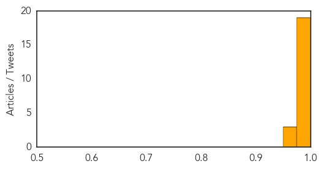

Chikungunya
30-Day Web Trend
5 alerts, 0 warnings

30-Day Twitter Trend
0 alerts, 0 warnings

Article Locations


Article Confidences

Top Articles:
- 0.999
- Harris County confirms 1st chikungunya case in Houston area - KYTX CBS19.tv - News, Weather, & Sports
- 0.999
- Harris County confirms first case of chikungunya, mosquito-borne disease
- 0.997
- Chikungunya Virus Confirmed in SC
- 0.995
- This is a sobering statistic on the spread of Chikungunya across the Caribbean
- 0.995
- Chikungunya virus found in S.C. resident
- 0.995
- The Chikungunya Virus Spreads in Haiti
- 0.992
- The Nassau Guardian
- 0.989
- DHEC confirms first case of 'Chikungunya' in Palmetto State
- 0.987
- Mississippi has 2 more cases of mosquito-borne virus
- 0.985
- Two more Mississippians confirmed having dangerous illness from Caribbean
- 0.985
- Two new Chikungunya cases confirmed in Mississippi
- 0.981
- 'Major epidemic' of mosquito-born chikungunya hits French West Indies
- 0.969
- Harris County has first case of mosquito-borne Chikungunya virus
Top Tweets:
-
No tweets found for Jul 11, 2014
MERS
30-Day Web Trend
30-Day Twitter Trend
0 alerts, 0 warnings

Article Locations

Article Confidences
Top Articles:
- 1.000
- Illinois man who twice met MERS patient in US apparently picked up infection, not sick
- 1.000
- Will The Virus Be A Problem For Canadians?
- 1.000
- Florida health officials announce a second US case of mysterious MERS virus
- 1.000
- American hospitalized with Middle East virus after return from Saudi Arabia; first case in US
- 0.999
- All You Need To Know About the MERS Virus
- 0.999
- Health officials say first US spread of Middle East virus not alarming; risk to public low
- 0.999
- US MERS case spread disease to a contact; first onward spread in North America
- 0.999
- What Is MERS? Answers To Common Questions About The Virus
- 0.999
- Expert panel convenes to advise WHO on whether MERS is a public health emergency
- 0.999
- With MERS concerns rising, WHO warns about some camel products, contact
- 0.999
- Exported MERS cases 'very likely,' WHO warns; Canada on the lookout, PHAC says
- 0.999
- MERS Virus Bringing Back Memories, Fears Of SARS
- 0.999
- MERS in hospitals significant but underplayed; Steps needed to stop spread
- 0.998
- MERS virus hasn't changed, not reason for surge in Saudi cases
- 0.997
- Officials revise diagnosis, say more testing shows MERS did not spread to Illinois man
- 0.996
- Toronto-made app helps doctors learn MERS symptoms
- 0.994
- MERS not yet serious emergency, World Health Organization says
- 0.993
- WHO releases details of 113 Saudi MERS cases that went unreported
- 0.988
- Saudi camels infected with MERS or MERS-like virus as early as 1992: study
- 0.970
- WHO: Basic hygiene can help prevent MERS spread
- 0.969
- Iran records its first 2 cases of potentially fatal Middle East respiratory virus
- 0.959
- Sudan Vision Daily
Top Tweets:
-
No tweets found for Jul 11, 2014